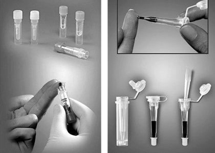
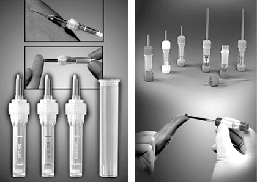

Microvette® y multivette®
Sistemas de Micro recolección

PRESENTACIÓN:
Microvette® 300/500
MICROVETTE® ofrece todas las ventajas para una moderna extracción de sangre en volúmenes de 300 µl o 500 µl:
Los recipientes son muy adecuados para la toma de sangre con el borde de recogida o como recipientes de goteo.
Para la extracción de sangre capilar puede utilizarse el exclusivo borde de recogida en toda su extensión. No es necesario el uso de una paleta de recogida adicional.
Microvette® CB 300
MICROVETTE® CB 300 cónica con tapón a presión sujeto está alojada en un recipiente externo que sirve para transporte y centrifugación. El recipiente externo se puede etiquetar con código de barras y colocarse directamente en diferentes equipos de analítica.
El diseño extremadamente fino del recipiente interno de la MICROVETTE® CB 300 permite que el sobrenadante líquido pueda ser pipeteado fácilmente después de la centrifugación.
Sistema Multivette® 600
MULTIVETTE® 600 combina en un solo producto la posibilidad de realizar una extracción tanto venosa como capilar. Para las extracciones venosas se conecta una aguja luer en el tubo capilar de MULTIVETTE®, que se rellena debido a la presión venosa. La extracción de sangre capilar se realiza según el principio end-to-end. El tubo capilar premontado posibilita la extracción de 600 µl de sangre. En caso de querer realizar una toma múltiple por extracción venosa, basta con colocar a cada tubo la membrana con adaptador luer y utilizar la aguja del MONOVETTE®.

Microvette® 100/200
MICROVETTE® para 100 µl o 200 µl constituye la solución ideal para la extracción de pequeños volúmenes de sangre.
El capilar montado end-to-end garantiza una extracción controlada mediante técnica capilar. Existe la posibiliad de extraer la sangre fácilmente con el borde de recogida especial o empleando la técnica de goteo.
Registro MICROVETTE: 2224R2001 SSA
Registro MULTIVETTE: 22225E2001 SSA
DATOS COMPLEMENTARIOS: Para mayor información comunicarse a:
SARSTEDT MÉXICO S. DE R.L. DE C.V.
Teléfono: (55) 8501-1577
Fax: 8501-1578
e-mail: info.mx@sarstedt.com
y en nuestra página www.sarstedt.com